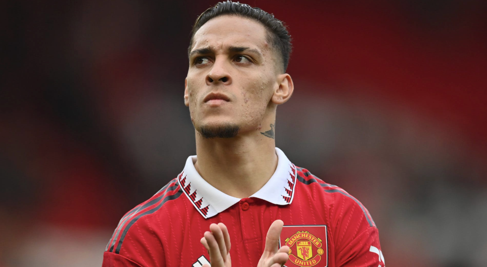

Premier League Transfer Stars and Flops
By Matias Alves-Nory | June 8, 2023
As the 2022-2023 Premier League season comes to an end, it’s the time of year where “analysts” come out of all depths of the internet to give their take on some of the transfers that occurred throughout the season. In this article, I will become one of these people and give my opinion on the five most expensive transfers into the Premier League during the summer transfer window. With transfers, there is expected to be a period where the player adjusts to the team and league and struggles hence why I am excluding winter transfers in this case.
Antony
On the 30 of August 2022, Manchester United announced the signing of Antony, a Brazilian winger from Ajax for 95 million euros, making him the most expensive Premier League signing during the summer window. The majority of people at the time and now agree that this was a tremendous overspend, but it’s Man United so it’s expected. 34 match weeks into the season, Antony has so far appeared in 20 games and has scored just 4 goals and assisted once.
As a winger, there is an expectation to contribute to goals whether that be by scoring or assisting. Per 90 minutes, Antony has an expected goals plus expected assists score of 0.44, slightly above the league average amongst forwards of 0.399. As the histogram below shows, a lot of Premier League forwards have a higher score, which is not something that a club would want from an almost 100 million euro signing.
To Antony’s credit, his season has been marred by injuries, officially missing 9 games for Manchester United due to injury. More recently, he has started to look really good and I believe he will be a successful player for Manchester United. Additionally his young age, Antonyis only 23, means he has plenty of time to improve. But right now, as the data shows, he is underperforming the price tag given to him.
Wesley Fofana
On the 31 of August 2022 Wesley Fofana joined Chelsea from Leicester City for 80.4 million euros, marking him as the second most expensive Premier League transfer during the window. Fofana has had some obstacles in his way during his time at Chelsea. He has suffered two separate knee injuries, missing out on 20 games for Chelsea this season and joined the team when they had just gotten a new owner who has been throwing money around like it’s nothing, limiting the amount of playing time he gets when healthy.
Because of these factors, Fofana has only appeared in 11 Premier League games for Chelsea. That said when Fofana plays he’s been good; across a total of 873 minutes he has made 43 tackles and interceptions.
As the scatter plot above shows he has been performing well above the average Premier League defender on a per minute basis. He has demonstrated that he is a great defender and without the factors listed previously, he might be one of the best defenders in the league. However, at the moment, he is not matching the price tag given to him and Chelsea are hoping they see him take a step forward next season.
Darwin Núñez
The third most expensive transfer of this last summer window was striker Darwin Núñez who Liverpool bought from Benfica for 80 million euros on June 13 2022. The hype around Núñez was incredible when he was first signed to Liverpool. However, his start of the season was probably not what he wanted as he became a meme for missing so many good chances. He has been able to fix this reputation a little bit throughout the season as he has gotten more confident. So far, in 27 games, he has scored 9 goals and gotten 3 assists.
Núñez’s raw stats don't tell the full story though. Per 90 minutes, Nunez has an expected goals plus expected assists score of 0.98, way above the league average amongst forwards of 0.399. The histogram below shows that Nunez is performing much better than most Premier League forwards with only 1 other player (Haaland) having a higher (xG+xAG)/90 with at least a 1000 minutes played.
Despite his slow start, Nunez has shown how good he can be and how successful he is at finding himself in good positions to score and get assists. The next step is to turn more of these chances into goals. At the beginning of the season, there was a real debate about whether Erling Haaland or Nunez would perform better. Haaland has thrown Nunez out of the water but Nunez has shown he has the quality necessary to be a great Premier League player.
Casemiro
The fourth most expensive signing during this window was Casemiro who Manchester United brought in from Real Madrid for 70.65 million euros on the 19th of August 2022. Casemiro has been an important player for Manchester United and has been instrumental in the success they have had this season. He has played in 22 Premier League matches and has scored two goals and three assists.
Manchester United hoped that bringing in an experienced veteran such as Casemiro would allow them to have the stability in their midfield that had been severely lacking over recent seasons. It seems that they were successful in this as he is now considered one of the best signings of the season. The radar chart below shows how Casemiro compares to an average Premier League midfielder.
One can see from this chart how great Casemiro has been for the Red Devils. His defensive, passing, shooting, and possession stats are much more than those of a typical Premier League midfielder. However, the chart also shows that Casemiro struggles at dribbling and fouls committed when compared to an average midfielder. But, no player is perfect and he is so good at other aspects that it doesn’t matter. It is safe to say that Manchester United would not be where they are without him in the midfield.
Alexander Isak
On the 26 of August 2022, Newcastle announced that they had signed Alexander Isak from Real Sociedad for 70 million euros, marking him as the fifth most expensive signing of the window. With Nunez and Haaland coming to the Premier League, this signing went under the radar. Unfortunately, Isak missed 13 games with Newcastle due to injury which caused him to have a slower start than desired. However, he has picked it up since then scoring 10 goals and getting one assist in 17 games.
Per 90 minutes, Isak has an expected goals plus expected assists score of 0.61, higher than the league average. The histogram below shows us that there are not a lot of Premier League forwards with a higher score. Additionally, we can see how much higher his expected goals and assists per 90 than the league average, marked by the red dot.

Isak has the (xG+xAG)/90 score and the goals to match it to lead Newcastle fans to be excited about his future with the team. He is so young and will continue to develop and become even better. While he is not blowing anyone away with his numbers, he has proven to be a quality Premier League striker and if he didn’t get hurt, he might look even better.
These five signings have led to mixed results for their respective teams and it is safe to say that it takes time for players to get used to the Premier League (except Haaland). However, all of these signings other than Casemiro are young players who have plenty of time to develop and contribute to their teams. I am excited to see how these players perform next year after being in the league for a season.